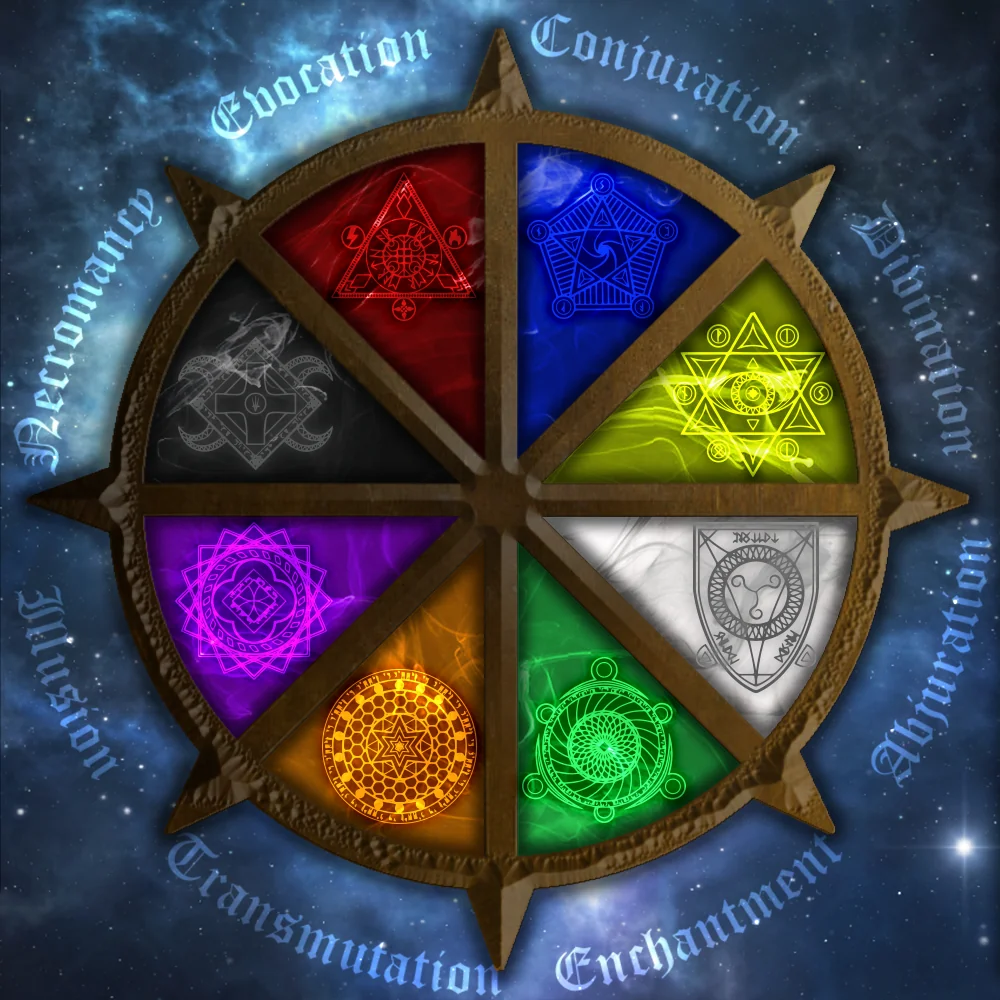
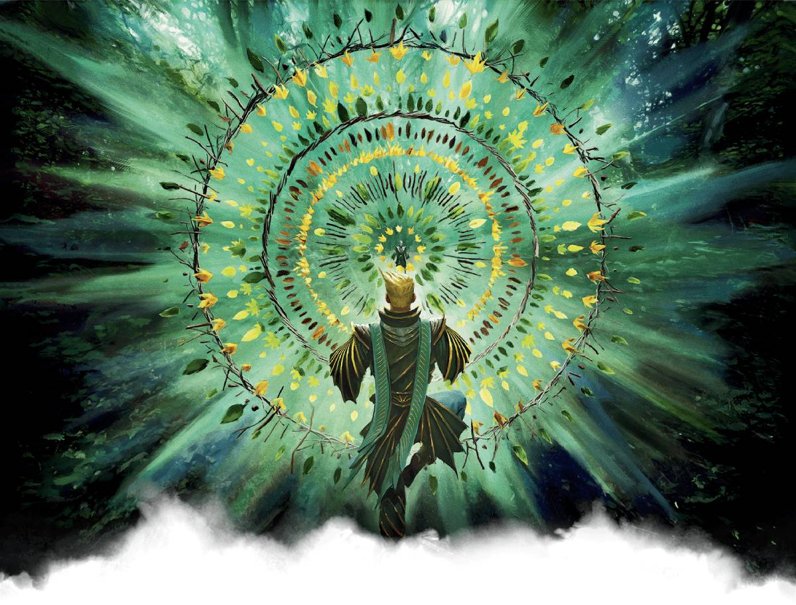

Understanding Magic in D&D
1. Arcane and Divine Magic
Magic in Dungeons & Dragons is divided into two primary sources: arcane and divine. Arcane magic, wielded by wizards, sorcerers, and warlocks, is drawn from raw magical energy and requires study or innate power. Wizards learn magic through rigorous training, recording spells in their spellbooks, while sorcerers channel it through inherited power. Warlocks, on the other hand, gain their magic through pacts with powerful entities. Divine magic, used by clerics and paladins, is granted by deities and higher beings. These spellcasters use their faith to channel divine energy, healing allies and smiting foes. Both forms of magic shape the world of D&D, influencing combat, exploration, and storytelling.
2. The Schools of Magic
Magic in D&D is further categorized into eight schools, each representing different aspects of spellcasting. Abjuration focuses on protection, creating barriers and dispelling harmful effects. Conjuration allows casters to summon creatures or objects from thin air. Divination grants knowledge by revealing hidden truths and glimpses of the future. Enchantment influences the minds of others, charming or controlling their actions. Evocation is the school of raw destructive power, enabling casters to hurl fireballs and lightning bolts. Illusion alters perception, creating false images or invisibility. Necromancy manipulates life and death, allowing casters to raise undead minions or drain vitality. Transmutation changes matter, granting abilities like flight or stone-hard skin. Each school offers unique advantages, shaping the way magic is used in gameplay.